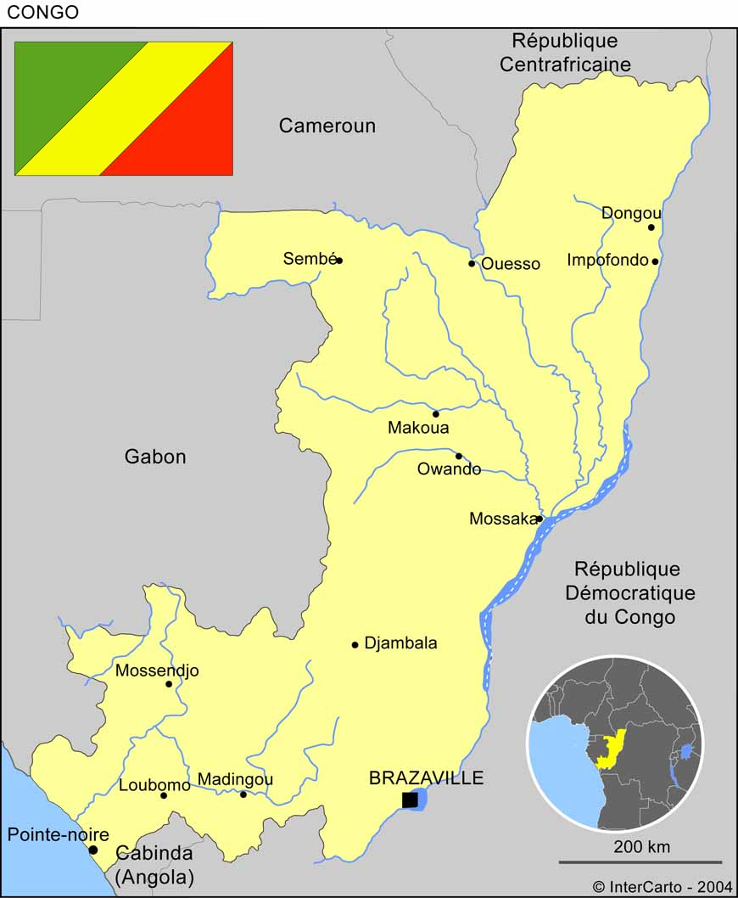

Brazzaville
Brazzaville est la capitale politique de la République du Congo. Elle est située sur la rive droite du fleuve Congo, en face de Kinshasa.
Pointe-Noire
Pointe-Noire est la capitale économique de la République du Congo. Elle est située sur la rive de l'océan Atlantique, environ 45 minutes de vol de Brazzaville.
Ouesso
Ouesso est la 3è ville de la République du Congo. Elle est située au nord du pays, à la frontière avec le Cameroun.
Brazzaville
Pointe-Noire
Ouesso